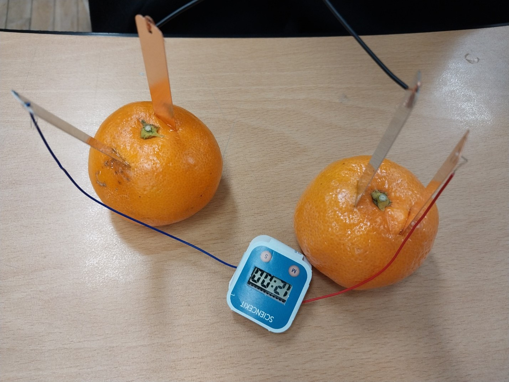

과일연료전지
실험원리
아연과 구리를 과일에 꽂으면 아연이 이온화하여 전자를 내놓음.
전자가 구리쪽으로 이동하면서 전자제품을 작동시키고 구리판 표면에서 수소기체를 발생시킴.
산화.환원 반응으로 전류가 흐름

자석과 자기장
자기력선의 특징
자기력선은 N극에서 나와 S극으로 들어간다.
자기력선은 끊어지거나 교차하지 않는다.
자기력선은 촘촘할수록 자기장의 세기가 세진다.
화학전지실험
영양소검출실험
생명공학진로인터뷰